ここではテレビ水平出力管以外の真空管を紹介してゆきます。
E130L PhilipｓのSQ管で、3結時の内部抵抗は非常に低くなります。一見TV水平出力管に見えるトッププレートなので、
買ってしまいました。
広帯域増幅、カソードフォロワー、シリーズ・レギュレータ用のSQ管
Ef/If=6.3V/1.7A、Ep/Pp=900V/27.5W、Esg/Psg=250V/5.0W Pp+Psg=27.5W 3結時のEp,sgは最大250Vと規定されています。
Gm=27500、μ2=6.5
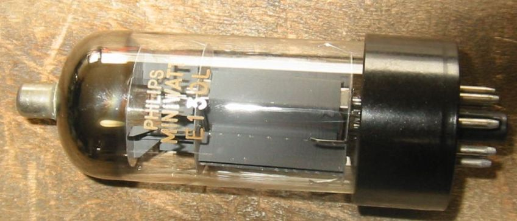
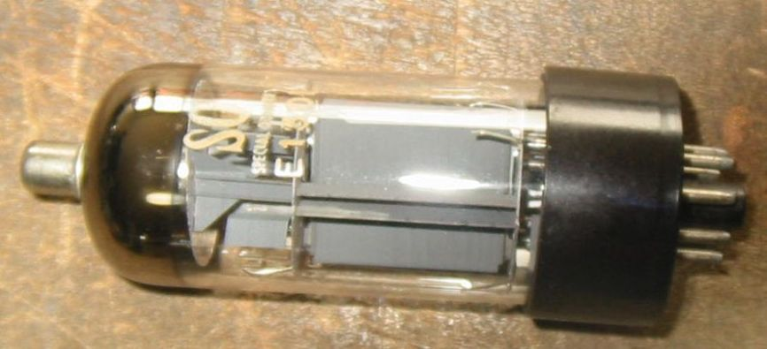
E130Lを使用した3結シングルアンプ この球もスクリーングリッド電圧が250Vに制限されているのですが、今回のアンプでは
電源トランスの都合で250Vしか得られないので何も考えることはありません。それにカソードバイアスなので、正味は210Vくらいです。
出力トランスは自作1Kオームくらいのものです。
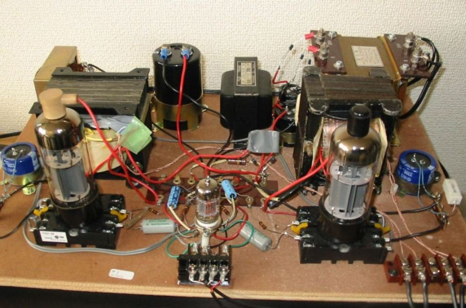
6AS7G/6080 この球はシリーズレギュレータ用で、内部抵抗が低くアンプ用には向いています。しかし、
増幅率μが2と非常に低いので、高いバイアス電圧と、高いドライブ電圧で苦労するということになっています。
6AS7Gとその高信頼管6520
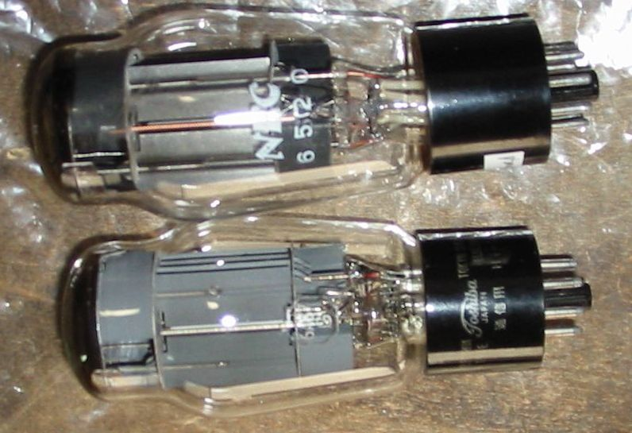
下RAYTHEON 6080 上CHATHAM 6080W
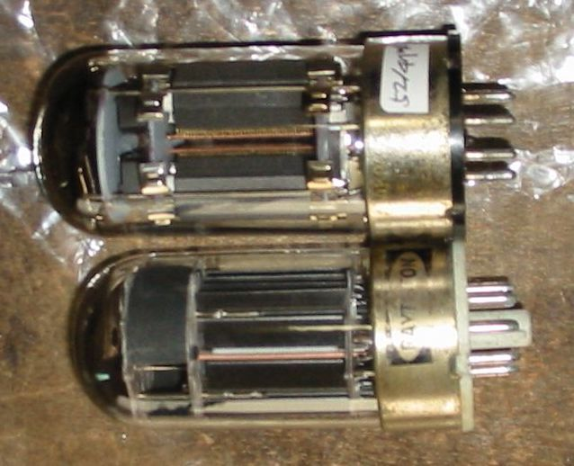
6AS7G/6080のテストのため、苦労しないでできる簡単なアンプを作ってみました。
シングルステレオアンプです。写真で分からないところだけ説明すると、B+は250V 、カソード抵抗は1KΩ、
これを作ったときには信号入力はトランスでステップアップしています。そのうち5極管の電圧増幅器
を入れるかもしれません。現在のところ球による差はありますが、プレート電流は各ユニット70mA位でプレート損失約13Wです。
CDプレーヤにつないで鳴らしていますが、音の大きさは十分で、少しボリュームをしぼって聞いています。
今後の改善点は、電源のハムが少し残っているので何とかすることと、出力トランスを低音の通るものにすることです。
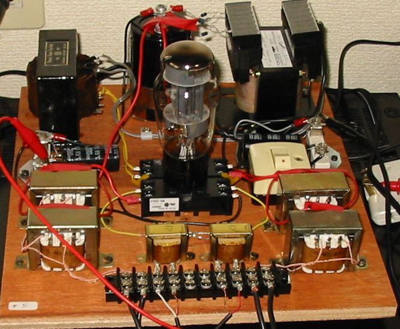
6AS7G/6080アンプを改良してみました。主な改良点はドライバー段を設けたことと、出力トランスを取り替えたことです。
ドライバーは前から使ってみたかったTV球、6BQ7Aを採用、入力トランスは廃止しました。
出力トランスとしてはこれも前から使ってみたかった電源トランスを使ってみました。1次側200V2次側24V2A程度の物です。
2次側の15Vのタップに8Ωのスピーカをつなぐと、負荷抵抗は約1.4KΩになり丁度良くなります。
ヒータートランスを使うというと、まともなアンプではなくおもちゃのような感じがしますが、ある程度大きな容量のヒータートランスは
十分実用になると思います。1次側200Vの物は100Vの物に比べてインダクタンスが2倍になります。また1次側の定格電流に対し
遙かに少ないプレート電流が流れても磁気飽和による影響は耳で分かるほどにはならないようです。
電源のハムについては1000μのケミコンを1個追加し、π型のフィルターにしました。コンデンサの容量が大きいので、
チョークコイルは使わず、2つのコンデンサの間に39Ω5Wattのセメント抵抗を入れておしまい、これで十分です。
Aクラス動作のアンプではプレート電流が変動しないので、あえてチョーク入力にすることはないし、大容量のコンデンサが
安いので、平滑用のチョークコイルも数十Ωの抵抗で十分代替えできます。
写真に写っている球はCHATHAMの6080Wで、6336のようにグラファイトアノードです。
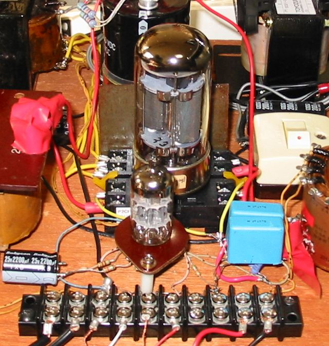
2010/11/26
RAYTHEON 6336A 2本 CHATHAM 6080W
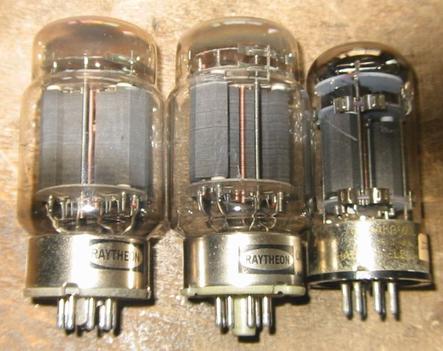
JUNKな6336Aをオークションで落札できたので、6AS7G/6080と交換してみました。
設定は何も変えていない状態ですが、B+250V 、カソード抵抗1KΩで、Ikが50〜60mAに減りました。
増幅率2.7、ｇｍ13500μなので6080より感度が上がり、良い音で鳴ります。
ゲッターがほとんどなくなった球もありますが、今のところあまり問題なく使えます。
ヒーター電力が6.3V５Aと大きくなることを除いて、6AS7G/6080より使いやすいと思います。
固定バイアスで使うといろいろトラブルがありそうですが、カソードバイアスなら安全です。
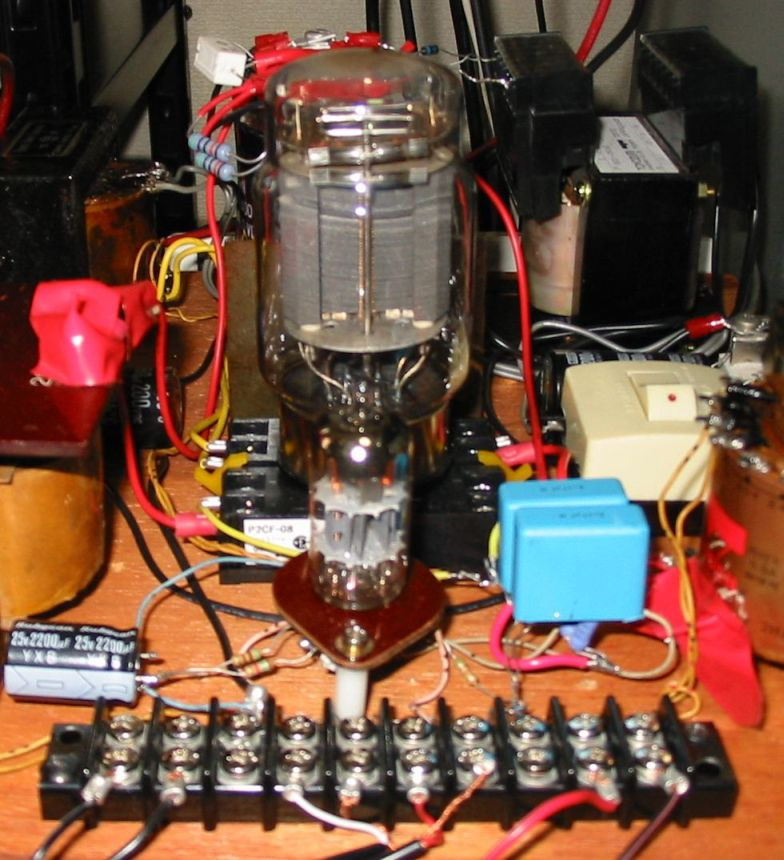
2010/12/16
増幅率5.4の5998A、これは今現在使用しています。
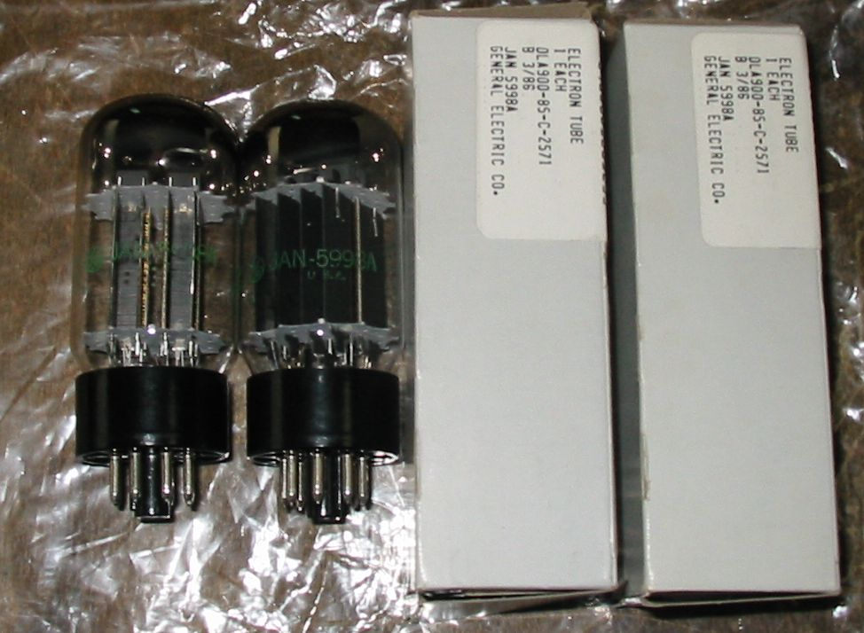
増幅率5.4の5998Aを使用したAMPです。OPTはヒータートランスではなく、普通のシングル用OPTを使用。
OPTの内部抵抗が高いので、実効Epは200V、Ip=43mAでプレート入力8.6Wです。
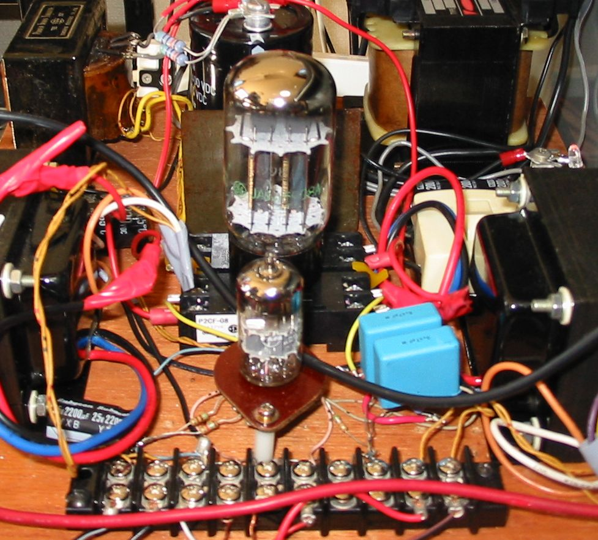
2011/02/16
メーカ不明 6SN7GTB、Toshiba 6BX7、RAYTHEON 6528 2本
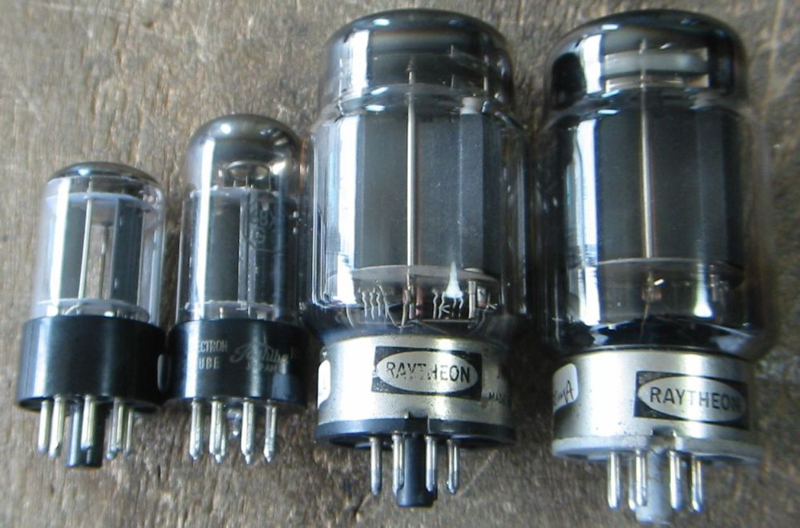
JUNKな6528をオークションで落札できたので、5998Aと交換してみました。
カソード抵抗を500Ωに下げ、Ikが47-48mAになりました。
増幅率9、ｇｍ37000μ、rp245Ωなので5998Aよりさらに感度が上がり、良い音で鳴ります。
ところで、6AS7始め6080、6336、6528などは6SN7や6BX7とpin接続が同じなので,、試しに差し替えて見ました。
Ep=250V、Rk=500Ωで、6BX7はIp=32mA、6SN7GTBは14mAとなり全く問題なく動作し、音量も十分です。
この部屋で使う限り、6SN7程度で十分なようです。
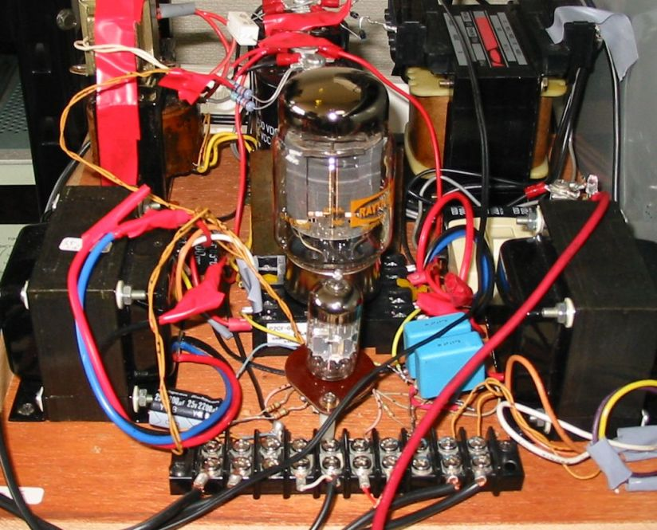
2011/05/13
JUNKな811Aがたまったので動作させてみました。
実効Epは420V、Ip=36mAでプレート入力は約15Wです。
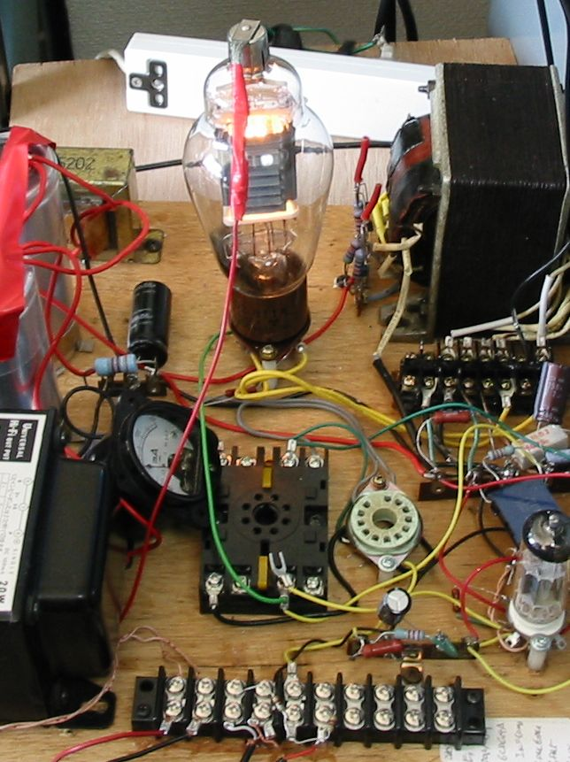
この写真にある811Aは使い方を間違ったのか、プレートがひどく焼けていますが、まだ私には使えます。
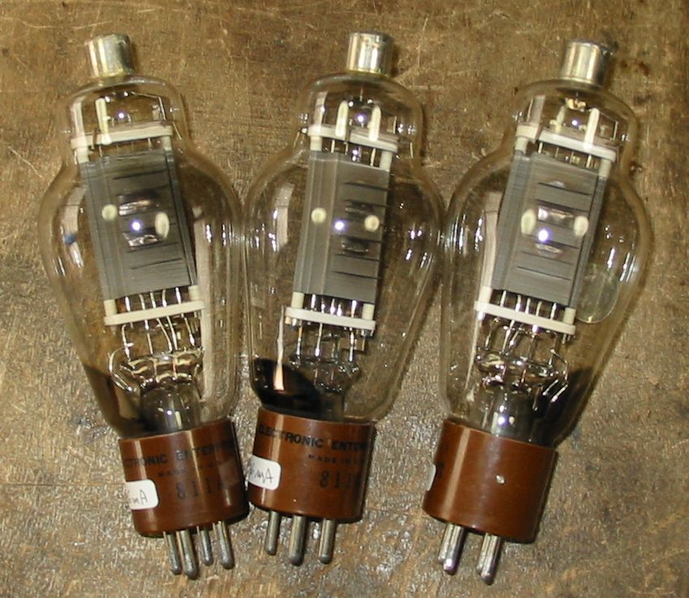
2011/03/07
8068K この球はシャントレギュレータ用で、内部抵抗が高くアンプ用には向いていません。
しかしこの球を良く見ると6BG6とあまり違わないように見えます。試してみましょう。
この球も807/6BG6シングルUL接続アンプで動作させました。（17/11/2011）
6BG6だと思えばなんともありません。それにピン接続まで同じです。スクリーングリッドの許容損失が1ワットと
小さいのですがそれなりにSG電流が小さく、左右で1.1mAと1.4mAと電圧320Vで0.4W程度で問題なしです。
音は807/6BG6と同じです。
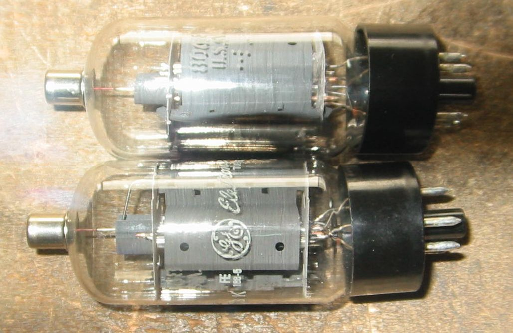
以下の球はまだ動作させていません。
25B6G この球は25BG6Gに混ざっていて、知らずに買ったものです。Pp=10W、6Y6か6W6のように低電圧用です。
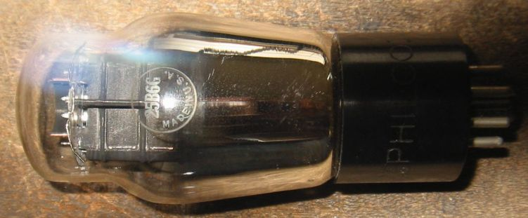
RCA UV-201-A RADIOTRON この球はフィラメントが切れたJUNK球として他の球と一緒に買ったものです。
足を良く磨いたら直りました。右側はベース部分の拡大です。
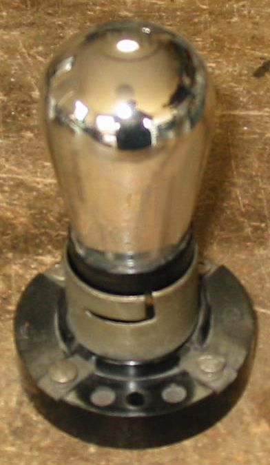 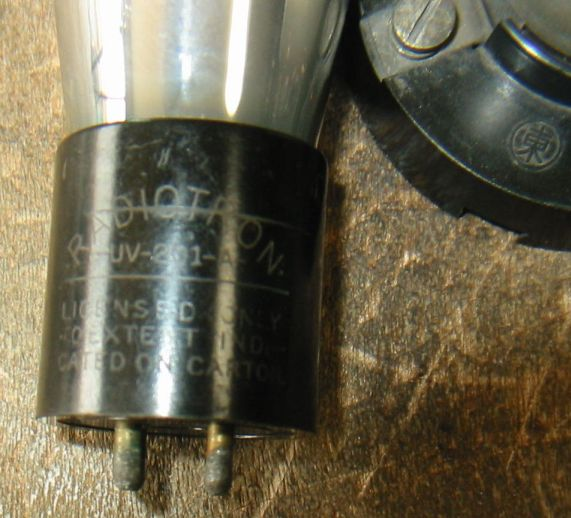
back to top
back to home page